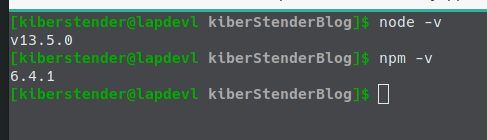

Introduction
In the beginning of 2010 decade, the world started looking to Javascript again. With the popularity of JQuery and the improvents of Ajax (Assynchornous Javascript and XML), now you would not need to put Java/PHP/{any other backend language} code in the middle of your HTML file to generate dynamic stuff that comes from the backend. You can fetch data from wherever server you want and use JQuery to update a single part of your page without full refresh making it looks instantaneous. Because now, you don't need to fetch a whole HTML page but small JSON/XML texts.
As Javascript was becoming popular the syntax and base library started to receive refactories, like the addition of Promises, Import/Export syntax, Async function, Await operator, Arrow functions, Spread syntax, Rest parameters and Destructuring assignment. All of these new features and other ones I haven't added here, made Javascript way better than it was in the past and brought attention to it again.
Roughly summarized (and not much reliable) story of Node
In the beginning there was Javascript in your browser, and it was good(Kind of). But Javascript unlike Java, is a script language(Duh!) and even though it has it's specification dictated by some company and published under the name of ECMA, each browser has it's own way to optmize or implement the specifications. Then in 2008, Google released V8. While it was very nice on Google Chrome, "some guys" realized that by making some modification to this engine they could use Javascript not only in the browser but also as a general purpose interpreter, similar to Python. "These guys" named it NodeJS.
A little bit of NPM
Like what Maven does for Java, they introduced some similar technology named NPM(Node Package Manager) that download your dependencies, put them in the 'classpath', package, deploy and even publish your application/library. The difference is that you have to install Maven separatedly from Java while NPM comes with Node.
To use NPM you simply create a file in the root of your application named package.json with the following (minimal)structure:
{
"name": "MyAppName", //1
"version": "0.0.1-snapshot", //2
"description": "An example package.json", //3
"engines": { //4
"node": ">=4.0.0",
"npm": ">=4.0.0"
},
"scripts": { //5
"run": "node app.js",
"test": "call your test library"
},
"dependencies": {//6
"a: "1.2.3",
"b: "3.2.1"
},
"devDependencies": { //7
"c: "1.2.3",
"d: "3.2.1"
}
}
There are way more properties you can have in your package.json file, but these ones I'm showing, are the most important ones(with the excpetion of engines):
name: This is the name of your application/libraryversion: This is the version of your application/librarydescription: This is where you put a brief description of what your application/library does. This is useful for others who use your applicationm/library and it is displayed in NPM websiteengines: This field is meant to warn the user about which is the best version for your code to run, so you can use any combination of numbers and comparison operators(==, >, <, >=, <=) in the sub fieldsnodeandnpmthat satisfies the condition for your code to run. Like, in the above example I'm saying that if whoever runs my program do not have at least node v12 or higher and npm v6 or higher, the application might not run correctly. "Might" because it does not prevent the application to try to run, it will emit a warning but nothing more. if you want it to not run if conditions are not met, you can create in the root of your app a file named.npmrcand putengine-strict=trueinside it..npmrchas more functionalities but, for this post this one is just enoughscripts: This is where you define the commands to build, build:prod, test, run or whatever you find necessary. Like Maven plugins where you tell maven how to run or compile your applicationdependencies: This is where you define a list of libraries your program dependends on, like React, Angular, MomentJS, etcdevDependencies: This is where you define a list of dependencies that will not be packaged with your code. Imagine you are coding in Coffeescript or Typescript. You don't need to package their compilers to your code, because in the end everything becomes Javascript. But not only compilers, for example, Uglyfy is a program that makes your code awful for anybody to read, once it runs it is not needed anymore, so you list it here instead of normal dependencies property.
After you create this file, NPM will be used mostly for running your application and 'installing' your dependencies. Installing here is between quotation because unlike Maven, that you have to manually put all dependencies, NPM provide a nice syntax where you download the dependency package and at the same time add it to your package.json file if you do not have this dependency in your dependency list:
npm install dependency-a dependency-b
This syntax is to download the latest version of the dependency-a or dependency-b, if you want to specify the version you can:
npm install dependency@1.2.3 dependency-b@^1.0.0
This ^ between @ and the version means you want the latest version from 1.x.x series, so imagine that today the newest version is 1.1.0, but tomorrow you run this command the newest version is 1.2.0. This will update dependency-b version automatically when downloading it, so you don't have to look everyday in case you are waiting for an update from 1.x.x series to fix a security bug or perfomance issue.
And to add dependencies to the property devDependencies you use a similar syntax. Simply add a --save-dev to your npm install command:
npm install --save-dev devDependency-a devDependency-b@^1.0.0 devDependency-c@3.0.0
And last but no least, to execute the scripts you created in scripts sections you simply call npm run-script script-name(or a short version npm run script-name)
npm run-script run #or npm run run
npm run-script test #or npm run test
Installing Node and NPM
I'm not going to detail this process because you can find it very detailed on NodeJS website itself. Go to NodeJS page, choose the appropriate package for your Operating System. If you are using Windows you can simply double click the EXE file and follow the next~next~next~install pattern. If you are on Linux or Mac you can unpackage the tar.xz file you downloaded using any graphical or terminal application you prefer, put the contents in some directory of your choice and then create an Environment Variable named NODE_HOME variable pointing to /path/to/node/ and add it to your PATH environment variable:
...
NODE_HOME=/path/to/node
PATH=$PATH:$NODE_HOME/bin
Create HOME env variable in Windows too, so you can access node via cmd. For more details please refer to this page or this one. As I said, NPM comes together, so once you get Node installed NPM will be installed too. Now simply test if everything is Ok:
If you prefer, many Linux OSes have package managers and Node is in their repositories so you can install like this:
sudo pacman -S nodejs #Arch based OSes
sudo apt-get install nodejs #Debian based
...# and so on and so forth
Starting the project
Now that you understood the minimum about Node and how to get it running on your machine, let's start our Node project as a simple CLI(Command Line Interface) app written in pure JS.
So the first thing you have to do is create our app directory. Let's call it node_app:

Now we create our package.json. Very simple one:
{
"name": "Node-example-app",
"version": "0.0.1-snapshot",
"description": "A simple Node application",
"engines": {
"node": ">=12.0.0",
"npm": ">=6.0.0"
},
"scripts": {
"test": "echo \"Error: no tests were specified\" && exit 1"
}
}
PS:The above section is "copy-able". It means if you don't want to manually type it, this is a simple text so you can copy and paste. All sections similar to this one allows it. Just pay attention because sometimes I will post a fragment of something you have to change and not the whole file and I'll add some ... (three dots) to denote that from bellow or above it you have to keep the original content
As we added engine property to define the minimum Node version we want to guarantee our app will run, we need to finish this config creating .npmrc in our root directory:
engine-strict=true
PS: Note that I'm using node v12 and npm v6 in our engine property while newest Node is v13. You cannot expect servers to be completely up to date with newer Node version for many reasons like security, stability, etc.
Next step is to create a src directory and inside this directory create a app.js file in it and as content simply add 'console.log("Hello World")':

Ok now we have the minimum for our app. Edit your package.json to add a new script:
...
"scripts": {
...
"execute": "node src/app.js",
...
}
...
And execute it with the command I already taught you:
If you've seen something similar to the below image, congratulations, you just made your first Node CLI application.
Adding a dependency
I showed you all possibilities of NPM command to add a dependency but, what exactly is a dependency? A dependency in this context, is an external code that add or extend functionalities to your program. They help us not to reinvent the wheel, so we can focus on the specific parts that these libraries cannot do. It is called dependency for once you add it to your code, it literally depends on that library from that moment on and if it is not in your classpath when running the application your program will not properly run.
Javascript has support for Date objects that represents manipulation of Years, Months, Days, Hours, Minutes, Seconds, etc. But, it is known that it is a little hard to handle, specially when you need to convert a date from one TimeZone to another. So there is a third party library, named moment.js, that is specialized in manipulating date/time, giving you more options than built-in Date. Let's add moment to our application to display the date and time for our user, then by adding this library to your dependecy list it will be available in your code like if you had coded it earlier.
First add it to you package.json file using the following command:
npm install moment@2.24.0
PS: Use the same version of the library I put above, so in the future this post will still work
Notice 2 things:
- Your
package.jsonfile now has a new field nameddependenciesandmomentjsas the only item there:
- Two items were created in your root directory:
- A new directory named
node_modules. This directory is automatically created whenever you runnpm install(and/or it's variations) and it contains all dependencies your app has. If you accidentally delete it, don't worry, when you runnpm install, boom, it appears again, for this reason you can ignore this directory using.gitignore,.dockerignoreor anyignore[something]in any versioning system - A new file named
package-lock.json. This file is similar topackage.jsonbut, with a small difference: It lists all the dependencies trees, making it easier for NPM to install the dependencies later and to verify if there is any conflict, like ifpackage.jsonis the human readable version andpackage-lock.jsonis the machine readable version. It is recomendable to not ignore this file in your versioning system, even though it will be recreated afternpm installis executed
- A new directory named
Now we update our /src/app.js to import and print the date:
const moment = require("moment");
console.log("It is: " + moment().format());
Run your app again and see the date appearing:
Testing in Javascript
You know, programming is one thing but, testing your code to guarantee it does what you really want it to do is a completely different thing. So, how one test code in Javascript? In Node? One of the most famous libraries for testing that I know in Javascript is called Jest. It is a very complete test suite framework, with assertion support, hooks to setup and tear down, mocking, code coverage and more. First step is to install Jest in our dev-dependency list:
npm install --save-dev jest@26.0.1
Notice that our package.json file was updated again and now it has a new field named dev-dependecies and Jest is the only item:
Let's create a separate class named Greetings in a different package/directory. First create javascript directory inside /src. Inside it(javascript) create a package/directory named greetings and finally inside it create a file named Greetings.js and put the given content:
class Greetings {
constructor(name){
this.name = name;
}
greet(){
return "Hello Mr/Ms " + this.name;
}
}
module.exports.Greetings = Greetings;
Now come back to the root of our app and create a directory named test, inside it create the same structure we have in our /src:

PS: It is not mandatory to follow the same structure, it is just to make it easier to read and Jest by default looks for a test directory in the root of your project
Now we code our tests. I'll write only two. One for success and one for "failure". Very simple tests as it is just a demonstration. So inside /test/javascript/greetings create our Greetings.test.js file and add the bellow code:
const {Greetings} = require('../../../src/javascript/greetings/Greetings.js');
const greetDev = new Greetings("NodeJSDev");
describe('Greetings', function() {
describe('#greet()', function() {
test('should return "Hello Mr/Ms NodeJSDev"', function() {
//GIVEN
const expected = "Hello Mr/Ms NodeJSDev";
//WHEN
const actual = greetDev.greet();
//THEN
expect(actual).toBe(expected);
});
test('should not return "Hello Mr/Ms NodeJSDev "', function() {
//GIVEN
const expected = "Hello Mr/Ms NodeJSDev ";
//WHEN
const actual = greetDev.greet();
//THEN
expect(actual).not.toBe(expected);
});
});
});
Next step is to modify test script in our package.json to execute Jest for us:
{
...
"scripts": {
...
"test": "jest"
...
}
}
Run it!!!

Unit testing and mocking
Not always your code will be simple enough to not depend on anything but it`s internal code. For example:
// Hypothetical file user_db_repo.js
const DB = require("./some_DB_lib");
class UserDBRepo {
getUserBirthdayByID(userID){
//Hypothetical DB API
const birthdate = DB.query("Select u.birthday From User u where u.id = :id").on("id", userID).execute();
if(birthdate === null){
throw new Error("UserID is invalid or user has no birthdate registered");
} else {
return new Date(birthdate);
}
}
}
module.exports.UserDBRepo = UserDBRepo;
Then you have another class that has a method that receives the user id and return it's age:
// Hypothetical file user_service.js
const {UserDBRepo} = require("./user_db_repo.js");
class UserService {
constructor(){
this.userDbRepo = new UserDBRepo();
}
getUserAge(userID){
try {
const now = Date.now();
const birthdate = this.userDbRepo.getUserBirthdayByID(userID);
const years = now.getFullYear() - birthdate.getFullYear();
const months = (years * 12) + (now.getMonth() - birthdate.getMonth()) ;
const calculatedAge = -1 * (months / 12);
return calculatedAge;
} catch(e){
throw new Error("Age not calculated for {" + e + "} reason");
}
}
}
module.exports.UserService = UserService;
To test UserService, you would be required to set up a temporary database, as you cannot connect to dev or even prod databases to run your tests, and the more methods you have the more data you have to put in this local database, not to mention that you have to wait for the database to be up so then your tests can start running. But that's why I said, "You would", not you should nor have to.
Unit Test is one of some test technique levels to guarantee that your code delivers what you intend by breaking it in as small pieces as you can/as possible. It does not matter if your code is divided in functions or classes or modules. You will treat the smallest part of your code as a unit and pretend that anything that piece depends on, is a working piece and ignore it when testing.
In our case, classes are our smallest pieces and our dependency is the class UserDBRepo. To "ignore this dependecy" in our test and only focus in our code(in this case, calculate the age of the user), we can use a technique called mocking where we will manipulate the class metadata to do what we want instead of connecting to a database, so we can simply return a hardcoded Date object making our tests to be executed fast and save us a lot of time by not worrying about setting up a temp db, configure the tests to connect to this db, put valid data, etc.
Even though Jest comes with mocking capabilities, I consider them a little "weak" for you don't have so many options to mock your objects. To do this, we need another library, one more focused in mocking and one of the most famous in Javascript world nowadays is Sinon. With Sinon you can mock the objects you want to ignore and force their functions to return hardcoded values to you simulating valid scenarios. Let's install it:
npm install --save-dev sinon@9.0.2
Now let's see how we mock our UserDBRepo to achieve our age calculation test:
const sinon = require("sinon");
const {UserDBRepo} = require("../../../src/javascript/mock_example/user_db_repo.js");
const {UserService} = require("../../../src/javascript/mock_example/user_service.js");
const userService = new UserService(); // Object to be tested
describe('UserService', function() {
beforeAll(function(){
const mockedNowDate = Date.parse("02 May 1989 09:00:00");
sinon.mock(Date).expects("now").returns(new Date(mockedNowDate));
});
afterEach(function(){
//To restore any mock you have done after the test is ran
sinon.restore();
});
describe('#getUserAge(userID)', function() {
test('should return 31', function() {
//GIVEN
const expected = 31;
const userID = 5;
//Change the behavior of getUserBirthdayByID to return 30 only when the argument is exactly 5
const mockedDate = Date.parse("02 May 2020 09:00:00");
sinon.mock(UserDBRepo.prototype).expects("getUserBirthdayByID").withExactArgs(5).returns(new Date(mockedDate));
//WHEN
const actual = userService.getUserAge(userID);
//THEN
expect(actual).toEqual(expected);
});
test('should throw error: "Age not calculated"', function() {
//GIVEN
const expected = new Error("Age not calculated for {Error: UserID is invalid or user has no birthdate registered} reason");
const userID = 5;
const errorToBeThrown = new Error("UserID is invalid or user has no birthdate registered");
//Change the behavior of getUserBirthdayByID to throw an exception only when the argument is exactly 5
sinon.mock(UserDBRepo.prototype).expects("getUserBirthdayByID").withExactArgs(5).throws(errorToBeThrown);
//WHEN
//THEN
expect(() => userService.getUserAge(userID)).toThrow(expected);
});
});
});
And just like that we ignored everything UserDbRepo.getUserBirthdayByID does and focused on the two cases we have there: When we receive a valid date and when we get an Exception error. This way we asserted that our method UserService.getUserAge is doing what we expect it to do using both Jest and Sinon.
And to prove that mocking can really do as I said, I made this hypothetical example in a working test where I created a useless db lib that not even returns something, mocked user db repo to return a spam of 31 years, like in the above example, created the test exactly as you read and if you want to run it to see the power of mocking please checkout this nodejs_introduction_mock_example branch.
Applying to our code
Now going back to our code, as Unit test and mocking were explained, how can we improve our code and test it properly? Let's transform this part "It is: " + moment().format(); in a separate class, so our smallest parts will be classes and our /src/app.js will have no code, but will call other classes code. This class, let's call it DateTimeGreetings, depends on moment js library. Moment Js is supposed to be tested already so you do not need to check if it does what you expect it to do, thus ignore it. Create the class /src/javascript/greetings/DateTimeGreetings.js:
const moment = require("moment");
class DateTimeGreetings {
greetDateTime(dateFormat){
return "It is: " + moment().format(dateFormat);
}
}
module.exports.DateTimeGreetings = DateTimeGreetings;
I know it is a simple code, but it is good enough to show unit test in our scenario. Here we have a problem when testing: Time is not constant, because everytime you execute your code it will show you different time, so once you write your test it will be literally "out-dated" in the next second and will fail assertion.
To fix it, we will use a function named useFakeTimers, that allows us to force moment or any library you might be using(even the native Date library that all browsers have) to always fetch a date and time you provided when checking internally for it. We have to do this instead of use sinon.mock because moment is a function returning an object that has no prototype structure, thus we cannot mock it using normal means.
This way we can ignore moment and force it to return what we want, because again, what we want to test is not moment, but our own code, in this case It is: {date-time}. I will again create two tests only, just to ilustrate what I was explaining. Now go to /test/javascript/greetings/, create DateTimeGreetings.test.js and put our tests:
const sinon = require("sinon");
const {DateTimeGreetings} = require("../../../src/javascript/greetings/DateTimeGreetings.js");
describe('DateTimeGreetings', function() {
//Create a function that receives a date and lock internal clock to always return this date
//to whatever function is fetching date-time
const clock = date => sinon.useFakeTimers(Date.parse(date));
const mockdate = "30 Apr 2020 10:20:00"
beforeEach(function(){ // Mocha utility function to run whatever you want before the tests
//Execute clock function to lock the date and time to what we want
clock(mockdate);
})
afterEach(function() { // Mocha utility function to run whatever you want after the test
//Restore internal clock
clock(mockdate).restore();
});
const dateGreet = new DateTimeGreetings();
describe('#greetDateTime()', function() {
test('should return "It is: 30-04-2020"', function() {
//GIVEN
const format = "DD-MM-YYYY";
const expected = "It is: 30-04-2020";
//WHEN
const actual = dateGreet.greetDateTime(format);
//THEN
expect(actual).toBe(expected);
});
test('should return "It is: 04-30-2020_10:20:00"', function() {
//GIVEN
const format = "MM-DD-YYYY_hh:mm:ss";
const expected = "It is: 04-30-2020_10:20:00";
//WHEN
const actual = dateGreet.greetDateTime(format);
//THEN
expect(actual).toBe(expected);
});
});
});
Now, instead of using this class directly in /src/app.js we will use it in /src/javascript/greetings/Greetings.js. Let's change our /src/javascript/greetings/Greetings.js file to make /src/javascript/greetings/DateTimeGreetings.js a dependency to demonstrate again how we have to ignore dependencies when testing our "unit":
const {DateTimeGreetings} = require("./DateTimeGreetings.js");
class Greetings {
constructor(name){
this.name = name;
this.dateTimeGreeter = new DateTimeGreetings();
}
greet(){
return "Hello Mr/Ms " + this.name + "\n" + this.dateTimeGreeter.greetDateTime("MMMM Do YYYY, h:mm:ss a");
}
}
module.exports.Greetings = Greetings;
This time, we will have a different strategy. Instead of manipulating the clock to always returns the same date and time, we will manipulate the class DateTimeGreetings to whenever we execute the method greetDateTime with the given parameter MMMM Do YYYY, h:mm:ss a, it should ignore the original code and return to us the following output: "It is: April 30rd 2020, 10:20:00 pm". Let's edit our /test/javascript/greetings/Greetings.test.js test suite to see how to do the mock:
const sinon = require("sinon");
const {Greetings} = require('../../../src/javascript/greetings/Greetings.js');
const {DateTimeGreetings} = require('../../../src/javascript/greetings/DateTimeGreetings.js');
const greetDev = new Greetings("NodeJSDev");
describe("Greetings", function() {
beforeEach(function(){
sinon
.mock(DateTimeGreetings.prototype)
.expects("greetDateTime")
.withExactArgs("MMMM Do YYYY, h:mm:ss a")
.returns("It is: April 30rd 2020, 10:20:00 pm");
});
afterEach(function(){
//This is to restore all your mocks to original code
//As you can mock things directly in the test in case you need, as I did in our db example
sinon.restore();
});
describe('#greet()', function() {
test(`should return "Hello Mr/Ms NodeJSDev\\nIt is: April 30rd 2020, 10:20:00 pm"`, function() {
//GIVEN
const expected = "Hello Mr/Ms NodeJSDev\nIt is: April 30rd 2020, 10:20:00 pm";
//WHEN
const actual = greetDev.greet();
//THEN
expect(actual).toEqual(expected);
});
test(`should not return "Hello Mr/Ms NodeJSDev \\nIt is: April 30rd 2020, 10:20:00 pm"`, function() {
//GIVEN
const expected = "Hello Mr/Ms NodeJSDev \nIt is: April 30rd 2020, 10:20:00 pm";
//WHEN
const actual = greetDev.greet();
//THEN
expect(actual).not.toEqual(expected);
});
});
});
And now run the tests again and you should see this:
Just o be clear, all these "rules" I said are for Unit Testing and Unit Testing is 1(one) of many tests types. There is a specific type of test named Integration Test that you have to fake a database for example or a backend server for ajax tests or even an HTTP engine to see if your code pieces integrate well and deliver what is expected as a whole. But, I will leave it for another post focused in testing only.
And now change /src/app.js:
const {Greetings} = require("./javascript/greetings/Greetings.js");
const greetDev = new Greetings("Node Dev");
console.log(greetDev.greet());
Run your app and see what it has become:
Conclusion
In this post we learned the basic of the basic about creating a Node JS app with simple and more complex tests. For now it is a simple CLI app but, from here we can evolve it easily to a complex frontend or even backend app. If you want to see the complete code, please, clone the bitbucket repository for this post and checkout branch nodejs_introduction. And if you came here but you don't speak english or even prefer portuguese language please check out the Brazilian Portuguese version for this post